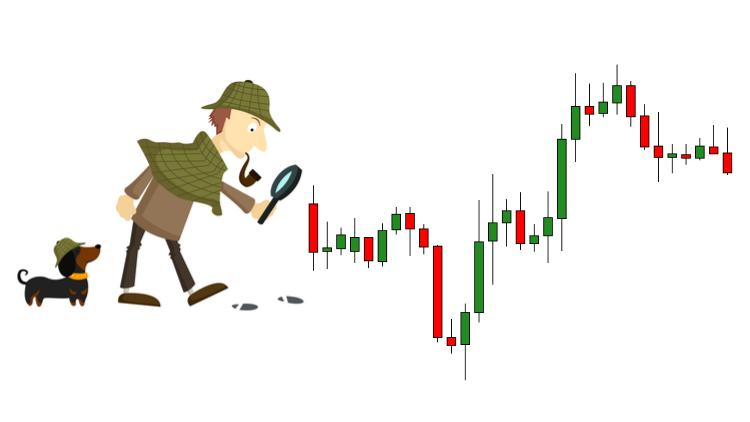

Technical Analysis: how and why?
If you want to get into crypto trading, you better learn at least the basics of technical analysis. While looking at charts, drawing lines, and identifying key price levels may seem silly at first glance, it is actually one of the best weapons you can have at your disposal, and it is definitely better than having nothing.
True, key levels and prices largely follow established methods of technical analysis, but crypto trading is a rebellious Wild West: volatility, markets move quickly, and they are more prone to price manipulation. Hence, the knowledge base that you might bring from other markets must be adapted to the cryptocurrency through your own experiences, lessons, drastic and decisive actions, and appropriate risk management techniques.
While it may sound daunting, cryptocurrency combined with adequate TA techniques can lead to many profitable opportunities.
If you are quick-witted and vigilant about your trades and strategies, you are likely to have a fun and profitable pastime.
Tools you can use to help you make decisions:
- Tradingview (charts and technical analysis)
- Predicoin (service for analyzing market sentiment)
- Coinpaprika (coin index)
- Coinmarketcal (crypto events calendar)
- Delta (portfolio tracking app)